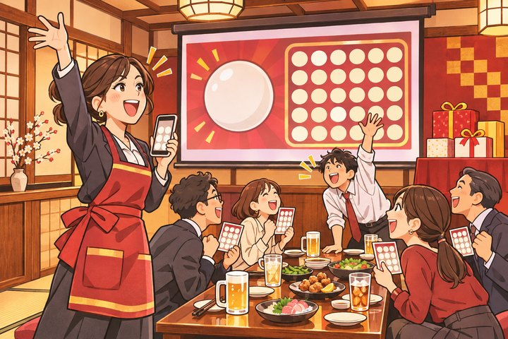

iPhone・iPad・Android 向け・ビンゴ大会の幹事の道具
回して、止めて、
ビンゴ！
忘年会・結婚式の二次会・子ども会のビンゴ大会を、スマホ1台で。手元で回して止めると、2〜3回ころがって玉が出る、ビンゴマシーンの手ざわり。テレビやプロジェクターには番号と盤を大きく映し、ビンゴが出たらカード番号で確かめて、景品を渡すところまで進められます。
App Store・Google Play で見る（準備中）買い切りの有料アプリです。一度買えば、すべての機能が使えます。アカウント登録・アプリ内課金・サブスクリプション・広告はありません。ネットにつながっていなくても使えます。

こんな困りごとのために作りました
回る時間が長い・ピタッと止まって味気ない
回る長さを選べます（短い・ふつう・長い・押すまで）。大きな［止める］を押すと、玉が2〜3回ころがってから出ます。自動で回す間隔も5段から選べます。
落ちて最初から・同じ数字がまた出る
1玉出るたびに端末に書いてから見せるので、途中でアプリを閉じても続きから。数字は重なりなく、全部の玉がちょうど1回ずつ出ることをテストで確かめています。
プロジェクターに映らない・数字が小さい
AirPlay や HDMI でテレビ・プロジェクターにつなぐと、操作を映さない専用の画面（16:9 いっぱい）に、出た玉・盤・リーチの人数・残りの景品を大きく出します。
本当にビンゴか分からない
刷ったカードには番号が入っています。カード番号を入れると、そのカードを作り直して出た玉に印を付け、そろったか・何玉目でそろったかを出します。
リーチとビンゴで盛りあがりたい
［リーチ］で人数を数えて画面に出し、ビンゴを確かめたらファンファーレと紙吹雪。読み上げは「Bの5番」「5番」から選べます。
広告の大きな音・データが消える
広告はありません。大会・景品・結果は端末の中に残り、消すのは自分で決められます。
できること
| 玉 | 75玉（B-I-N-G-O の字つき・字なしも）・90玉・自由な範囲（1〜999。番号くじにも） |
|---|---|
| 回す | ビンゴマシーンを回して止める・回る長さ・自動で回す（5段）・本物のビンゴマシーンを使う会場では出た番号を入れる・盤を押して入れる・最後の1玉を取り消す |
| 盤 | 全部の番号に出た印・最後の5玉・リーチの人数 |
| カード | カードを刷る（PDF・A4 に75玉は4枚・90玉は6枚・カード番号と「カードの組」の番号つき・最大500枚。組の番号を入れれば前に刷ったカードも使える）・印刷（AirPrint／Android の印刷）・カード番号でビンゴを確かめる |
| 型 | 1列・2列・四隅・十字・X・外周・全マス・自分で作る（90玉は1列・2列・全部） |
| 景品 | 名前と写真・改行で一括に入れる・並べかえ・当たった人と何玉目か・残りをテレビに |
| 見た目 | テレビに映すテーマ7つ（宴会・結婚式・クリスマス・お正月・こども・夜空・シンプル）・ダークモード |
| そのほか | 読み上げ（日本語・英語）と効果音（アプリの中で作った音）・操作のロック（玉の取り消し・大会を終える・設定を開くときに Face ID かパスコードで確かめる）・アクションボタンと Siri で「次の玉を回す」「さっきの番号をもう一度」・iPad と iPhone Duo の広い画面では、ビンゴマシーンと盤を左右に並べます |
アプリの中でお金や賞品を扱うことはありません。数字は端末の安全な乱数で決めます。くわしくはプライバシーポリシーへ。